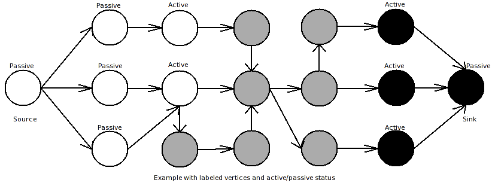

Boykov-Kolmogorov Maximum Flow
Calculates the maximum flow of a network using the Boykov-Kolmogorov augmenting-path algorithm.
Defined in: <boost/graph/boykov_kolmogorov_max_flow.hpp>
(1) Non-named parameter version (all maps)
template <class Graph, class CapacityEdgeMap, class ResidualCapacityEdgeMap,
class ReverseEdgeMap, class PredecessorMap, class ColorMap,
class DistanceMap, class IndexMap>
typename property_traits<CapacityEdgeMap>::value_type boykov_kolmogorov_max_flow(
Graph& g,
CapacityEdgeMap cap,
ResidualCapacityEdgeMap res_cap,
ReverseEdgeMap rev_map,
PredecessorMap pre_map,
ColorMap color,
DistanceMap dist,
IndexMap idx,
typename graph_traits<Graph>::vertex_descriptor src,
typename graph_traits<Graph>::vertex_descriptor sink);| Direction | Parameter | Description |
|---|---|---|
IN |
|
A directed graph. The graph’s type must be a model of Vertex List Graph, Edge List Graph and Incidence Graph. For each edge (u,v) in the graph, the reverse edge (v,u) must also be in the graph. Performance of the algorithm will be slightly improved if the graph type also models Adjacency Matrix. |
IN |
|
The edge capacity property map. The type must be a model of a constant Lvalue Property Map. The key type of the map must be the graph’s edge descriptor type. |
OUT |
|
The edge residual capacity property map. The type must be a model of a mutable Lvalue Property Map. The key type of the map must be the graph’s edge descriptor type. |
IN |
|
An edge property map that maps every edge (u,v) in the graph to the reverse edge (v,u). The map must be a model of constant Lvalue Property Map. The key type of the map must be the graph’s edge descriptor type. |
UTIL |
|
A vertex property map that stores the edge to the vertex’s predecessor. The map must be a model of mutable Lvalue Property Map. The key type of the map must be the graph’s vertex descriptor type. |
OUT/UTIL |
|
A vertex property map that stores a color for each vertex. If the color of a vertex after running the algorithm is black the vertex belongs to the source tree, else it belongs to the sink-tree (used for minimum cuts). The map must be a model of mutable Lvalue Property Map. The key type of the map must be the graph’s vertex descriptor type. |
UTIL |
|
A vertex property map that stores the distance to the corresponding terminal. It is a utility map for speeding up the algorithm. The map must be a model of mutable Lvalue Property Map. The key type of the map must be the graph’s vertex descriptor type. |
IN |
|
Maps each vertex of the graph to a unique integer in the range
|
IN |
|
The source vertex for the flow network graph. |
IN |
|
The sink vertex for the flow network graph. |
Additional overloaded versions for non-named parameters are provided (without DistanceMap/ColorMap/DistanceMap; for those, iterator_property_map objects with the provided index map are used).
(2) Named parameter version
template <class Graph, class P, class T, class R>
typename property_traits<typename property_map<Graph, edge_capacity_t>::const_type>::value_type
boykov_kolmogorov_max_flow(
Graph& g,
typename graph_traits<Graph>::vertex_descriptor src,
typename graph_traits<Graph>::vertex_descriptor sink,
const bgl_named_params<P, T, R>& params = _all defaults_);| Direction | Parameter | Description |
|---|---|---|
IN |
|
A directed graph. The graph’s type must be a model of Vertex List Graph, Edge List Graph and Incidence Graph. For each edge (u,v) in the graph, the reverse edge (v,u) must also be in the graph. Performance of the algorithm will be slightly improved if the graph type also models Adjacency Matrix. |
IN |
|
The source vertex for the flow network graph. |
IN |
|
The sink vertex for the flow network graph. |
IN |
|
Named parameters passed via |
| Direction | Named Parameter | Description / Default |
|---|---|---|
IN |
|
The edge capacity property map. The type must be a model of a constant
Lvalue Property Map.
The key type of the map must be the graph’s edge descriptor type. |
OUT |
|
The edge residual capacity property map. The type must be a model of a
mutable Lvalue Property Map.
The key type of the map must be the graph’s edge descriptor type. |
IN |
|
An edge property map that maps every edge (u,v) in the graph to the
reverse edge (v,u). The map must be a model of constant
Lvalue Property Map.
The key type of the map must be the graph’s edge descriptor type. |
UTIL |
|
A vertex property map that stores the edge to the vertex’s predecessor.
The map must be a model of mutable
Lvalue Property Map.
The key type of the map must be the graph’s vertex descriptor type. |
OUT/UTIL |
|
A vertex property map that stores a color for each vertex. If the color
of a vertex after running the algorithm is black the vertex belongs to the
source tree, else it belongs to the sink-tree (used for minimum cuts). The
map must be a model of mutable
Lvalue Property Map.
The key type of the map must be the graph’s vertex descriptor type. |
UTIL |
|
A vertex property map that stores the distance to the corresponding
terminal. It is a utility map for speeding up the algorithm. The map must
be a model of mutable
Lvalue Property Map.
The key type of the map must be the graph’s vertex descriptor type. |
IN |
|
Maps each vertex of the graph to a unique integer in the range
|
Description
The boykov_kolmogorov_max_flow() function calculates the maximum flow of a network.
See Section Network Flow Algorithms for a description of maximum flow.
The calculated maximum flow will be the return value of the function.
The function also calculates the flow values f(u,v) for all (u,v) in E, which are returned in the form of the residual capacity r(u,v) = c(u,v) - f(u,v).
Requirements
The directed graph G=(V,E) that represents the network must include a reverse edge for every edge in E.
That is, the input graph should be Gin = (V,{E U ET}).
The ReverseEdgeMap argument rev must map each edge in the original graph to its reverse edge, that is (u,v) → (v,u) for all (u,v) in E.
While the push-relabel method states that each edge in ET has to have capacity of 0, the reverse edges for this algorithm ARE allowed to carry capacities. If there are already reverse edges in the input Graph G, those can be used. This can halve the amount of edges and will noticeably increase the performance.
Algorithm description
The Boykov-Kolmogorov max-flow (or often BK max-flow) algorithm is a variety of the augmenting-path algorithm. Standard augmenting path algorithms find shortest paths from source to sink vertex and augment them by subtracting the bottleneck capacity found on that path from the residual capacities of each edge and adding it to the total flow. Additionally the minimum capacity is added to the residual capacity of the reverse edges. If no more paths in the residual-edge tree are found, the algorithm terminates. Instead of finding a new shortest path from source to sink in the graph in each iteration, the Boykov-Kolmogorov algorithm keeps the already found paths as follows:
The algorithm builds up two search trees, a source-tree and a sink-tree. Each vertex has a label (stored in ColorMap) to which tree it belongs and a status-flag if this vertex is active or passive. In the beginning of the algorithm only the source and the sink are colored (source==black, sink==white) and have active status. All other vertices are colored gray. The algorithm consists of three phases:
grow-phase: In this phase active vertices are allowed to acquire neighbor vertices that are connected through an edge that has a capacity-value greater than zero. Acquiring means that those vertices become active and belong now to the search tree of the current active vertex. If there are no more valid connections to neighbor vertices, the current vertex becomes passive and the grow phase continues with the next active vertex. The grow phase terminates if there are no more active vertices left or a vertex discovers a vertex from the other search tree through an unsaturated edge. In this case a path from source to sink is found.
augment-phase: This phase augments the path that was found in the grow phase. First it finds the bottleneck capacity of the found path, and then it updates the residual-capacity of the edges from this path by subtracting the bottleneck capacity from the residual capacity. Furthermore the residual capacity of the reverse edges are updated by adding the bottleneck capacity. This phase can destroy the built up search trees, as it creates at least one saturated edge. That means, that the search trees collapse to forests, because a condition for the search trees is, that each vertex in them has a valid (=non-saturated) connection to a terminal.
adoption-phase: Here the search trees are reconstructed. A simple solution would be to mark all vertices coming after the first orphan in the found path free vertices (gray). A more sophisticated solution is to give those orphans new parents: The neighbor vertices are checked if they have a valid connection to the same terminal like this vertex had (a path with unsaturated edges). If there is one, this vertex becomes the new parent of the current orphan and this forest is re-included into the search tree. If no new valid parent is found, this vertex becomes a free vertex (marked gray), and its children become orphans. The adoption phase terminates if there are no more orphans.

Details
-
Marking heuristics: A timestamp is stored for each vertex which shows in which iteration of the algorithm the distance to the corresponding terminal was calculated.
-
This distance is used and gets calculated in the adoption-phase. In order to find a valid new parent for an orphan, the possible parent is checked for a connection to the terminal to which tree it belongs. If there is such a connection, the path is tagged with the current time-stamp, and the distance value. If another orphan has to find a parent and it comes across a vertex with a current timestamp, this information is used.
-
The distance is also used in the grow-phase. If a vertex comes across another vertex of the same tree while searching for new vertices, the other’s distance is compared to its distance. If it is smaller, that other vertex becomes the new parent of the current. This can decrease the length of the search paths, and so amount of adoptions.
-
-
Ordering of orphans: As described above, the augment-phase and the adoption phase can create orphans. The orphans the augment-phase generates, are ordered according to their distance to the terminals (smallest first). This combined with the distance/timestamp heuristics results in the possibility for not having to recheck terminal-connections too often. New orphans which are generated in adoption phase are processed before orphans from the main queue for the same reason.
Returns
The maximum flow value of the network, of type property_traits<CapacityEdgeMap>::value_type.
The flow values for individual edges can be recovered from the residual capacity map as f(u,v) = c(u,v) - r(u,v).
Example
#include <boost/graph/adjacency_list.hpp>
#include <boost/graph/boykov_kolmogorov_max_flow.hpp>
#include <iostream>
using namespace boost;
using Traits = adjacency_list_traits<vecS, vecS, directedS>;
using Graph = adjacency_list<vecS, vecS, directedS,
property<vertex_color_t, default_color_type,
property<vertex_distance_t, long,
property<vertex_predecessor_t, Traits::edge_descriptor>>>,
property<edge_capacity_t, int,
property<edge_residual_capacity_t, int,
property<edge_reverse_t, Traits::edge_descriptor>>>>;
using Edge = graph_traits<Graph>::edge_descriptor;
void add_flow_edge(Graph& g, int u, int v, int cap) {
Edge e1 = add_edge(u, v, g).first;
Edge e2 = add_edge(v, u, g).first;
put(edge_capacity, g, e1, cap);
put(edge_capacity, g, e2, 0);
put(edge_reverse, g, e1, e2);
put(edge_reverse, g, e2, e1);
}
int main() {
Graph g(4);
add_flow_edge(g, 0, 1, 3);
add_flow_edge(g, 0, 2, 2);
add_flow_edge(g, 1, 3, 2);
add_flow_edge(g, 2, 3, 3);
int flow = boykov_kolmogorov_max_flow(g, vertex(0, g), vertex(3, g));
std::cout << "Boykov-Kolmogorov max flow: " << flow << "\n";
}Boykov-Kolmogorov max flow: 4DIMACS Example
This reads an example maximum flow problem (a graph with edge capacities) from a file in the DIMACS format (example/max_flow.dat).
The source for this example can be found in example/boykov_kolmogorov-eg.cpp.
#include <boost/config.hpp>
#include <iostream>
#include <string>
#include <boost/graph/adjacency_list.hpp>
#include <boost/graph/boykov_kolmogorov_max_flow.hpp>
#include <boost/graph/read_dimacs.hpp>
#include <boost/graph/graph_utility.hpp>
int
main()
{
using namespace boost;
typedef adjacency_list_traits < vecS, vecS, directedS > Traits;
typedef adjacency_list < vecS, vecS, directedS,
property < vertex_name_t, std::string,
property < vertex_index_t, long,
property < vertex_color_t, boost::default_color_type,
property < vertex_distance_t, long,
property < vertex_predecessor_t, Traits::edge_descriptor > > > > >,
property < edge_capacity_t, long,
property < edge_residual_capacity_t, long,
property < edge_reverse_t, Traits::edge_descriptor > > > > Graph;
Graph g;
property_map < Graph, edge_capacity_t >::type
capacity = get(edge_capacity, g);
property_map < Graph, edge_residual_capacity_t >::type
residual_capacity = get(edge_residual_capacity, g);
property_map < Graph, edge_reverse_t >::type rev = get(edge_reverse, g);
Traits::vertex_descriptor s, t;
read_dimacs_max_flow(g, capacity, rev, s, t);
std::vector<default_color_type> color(num_vertices(g));
std::vector<long> distance(num_vertices(g));
long flow = boykov_kolmogorov_max_flow(g ,s, t);
std::cout << "c The total flow:" << std::endl;
std::cout << "s " << flow << std::endl << std::endl;
std::cout << "c flow values:" << std::endl;
graph_traits < Graph >::vertex_iterator u_iter, u_end;
graph_traits < Graph >::out_edge_iterator ei, e_end;
for (boost::tie(u_iter, u_end) = vertices(g); u_iter != u_end; ++u_iter)
for (boost::tie(ei, e_end) = out_edges(*u_iter, g); ei != e_end; ++ei)
if (capacity[*ei] > 0)
std::cout << "f " << *u_iter << " " << target(*ei, g) << " "
<< (capacity[*ei] - residual_capacity[*ei]) << std::endl;
return EXIT_SUCCESS;
}The output is:
c The total flow: s 13 c flow values: f 0 6 3 f 0 1 0 f 0 2 10 f 1 5 1 f 1 0 0 f 1 3 0 f 2 4 4 f 2 3 6 f 2 0 0 f 3 7 5 f 3 2 0 f 3 1 1 f 4 5 4 f 4 6 0 f 5 4 0 f 5 7 5 f 6 7 3 f 6 4 0 f 7 6 0 f 7 5 0
Notes
The algorithm is mainly implemented as described by Boykov and Kolmogorov in [69]. An extended version can be found in the PhD Thesis of Kolmogorov [68]. The following changes are made to improve performance:
-
Initialization: the algorithm first augments all paths from source→sink and all paths from source→VERTEX→sink. This improves especially graph-cuts used in image vision where nearly each vertex has a source and sink connect. During this step, all vertices that have an unsaturated connection from source are added to the active vertex list and so the source is not.
-
Active vertices: Boykov-Kolmogorov uses two lists for active nodes and states that new active vertices are added to the rear of the second. Fetching an active vertex is done from the beginning of the first list. If the first list is empty, it is exchanged by the second. This implementation uses just one list.
-
Grow-phase: In the grow phase the first vertex in the active-list is taken and all outgoing edges are checked if they are unsaturated. This decreases performance for graphs with high-edge density. This implementation stores the last accessed edge and continues with it, if the first vertex in the active-list is the same one as during the last grow-phase.